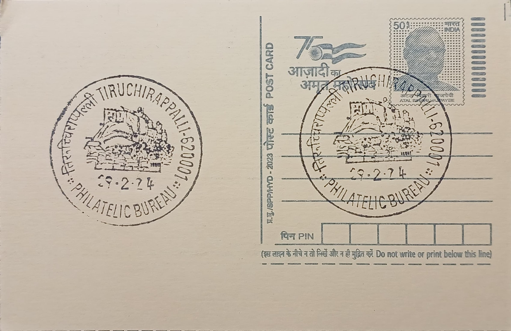

Rock Fort
மலைக்கோட்டை


The name Rock Fort derives directly from the massive outcrop of gneiss on which it stands, a formation local tradition and geologists alike regard as among the oldest exposed rock surfaces on earth, with estimates placing its age well beyond that of the Himalayan ranges. Tamil tradition links the hill to the legend of Thayumanavar, in which Shiva is said to have taken the form of a mother to nurse a devotee's sick child, giving the base-level shrine its name, Thayumanavar ("he who became the mother"). The rock itself, rising abruptly from the plain beside the Kaveri river, made the site a natural citadel long before any formal fortification was added to its summit.
Rock Fort functions today as both a living Hindu pilgrimage site and a nationally significant heritage monument, anchored by the Ucchi Pillayar Temple dedicated to Ganesha at its summit and the cave-cut Thayumanavar (Mathrubhuteswarar) Temple devoted to Shiva lower down the hill. Its religious importance is paired with its historical standing as the defining military landmark of Tiruchirappalli, a city whose control repeatedly determined dominance over the surrounding Kaveri delta region. Because of its rock-cut antiquity, the temple complex is maintained under the Archaeological Survey of India, giving it protected status alongside its continued function as an active place of worship.
The earliest rock-cut shrines on the hill are attributed to the Pallava king Mahendravarman I, who reigned in the early seventh century CE and is credited with initiating cave-temple architecture carved directly into the hillside; a second Pallava cave temple nearby is traditionally associated with his successor, Narasimhavarman I. These lower cave temples feature sculptural work characteristic of sixth- and seventh-century Pallava craftsmanship, while the Ucchi Pillayar shrine at the summit and the broader fortifications were substantially developed later by the Vijayanagara Empire and subsequently completed by the Nayak rulers of Madurai. A climb of roughly 344 to 400 rock-hewn steps, figures vary slightly across sources, connects the base of the hill to the summit, passing inscriptions that some accounts date as far back as the third century BCE.
Strategically, the fort's commanding height over the Kaveri plain made it a prized military asset during the eighteenth-century Carnatic Wars, when French and British forces contested control of Tiruchirappalli as part of their wider struggle for dominance in southern India; the hill's natural defenses and sightlines over the surrounding city and the Srirangam temple complex across the river gave whichever side held it a decisive tactical advantage. Among the fort's distinguishing features is the lingam inside the Thayumanavar shrine, which is not a separately installed idol but a natural projection of the rock itself, underscoring how the temple architecture was built to incorporate rather than replace the hill's original geological form.
The site today is administered jointly by the Hindu Religious and Charitable Endowments Department, which oversees temple affairs, and the Archaeological Survey of India, which is responsible for conservation of the rock-cut structures and inscriptions; entry to the upper sanctum areas is restricted to Hindu devotees in keeping with temple custom, while the fort's outer precincts and viewing points remain open to all visitors. Tiruchirappalli's municipal corporation has periodically carried out lighting, pathway, and safety upgrades along the stepped ascent to accommodate both pilgrim traffic and tourist footfall, particularly during the Vinayaka Chaturthi festival season when visitor numbers rise sharply. The hill continues to serve as Tiruchirappalli's principal vantage point, drawing both worshippers climbing to the Ganesha shrine and visitors who come chiefly for the panoramic view of the city and the Kaveri basin below.
| Date of Introduction | December 17, 1974 |
|---|---|
| Address | Incharge, |
| Philatelic Bureau, Tiruchirappalli PB, | |
| Tiruchirappalli (dt.), Tamil Nadu - 620001. |